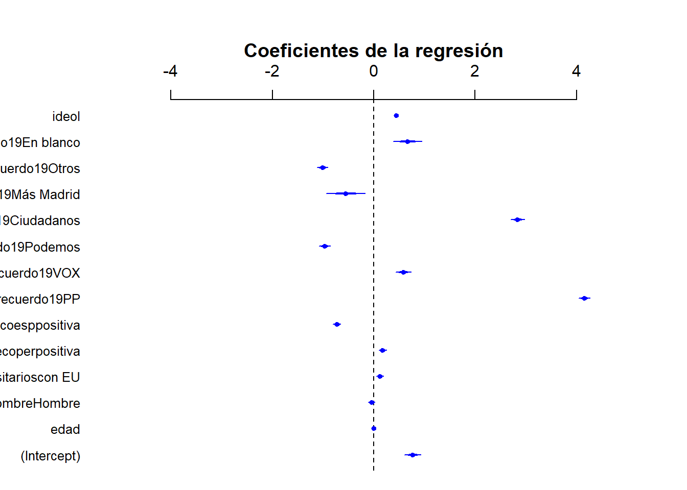
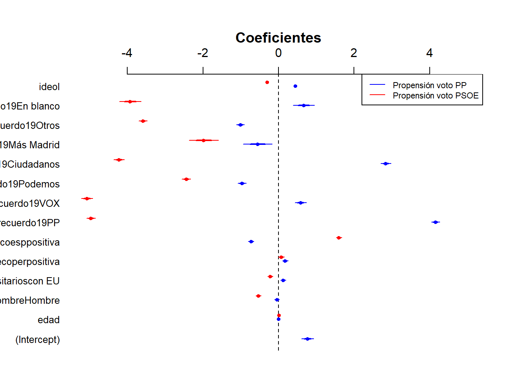
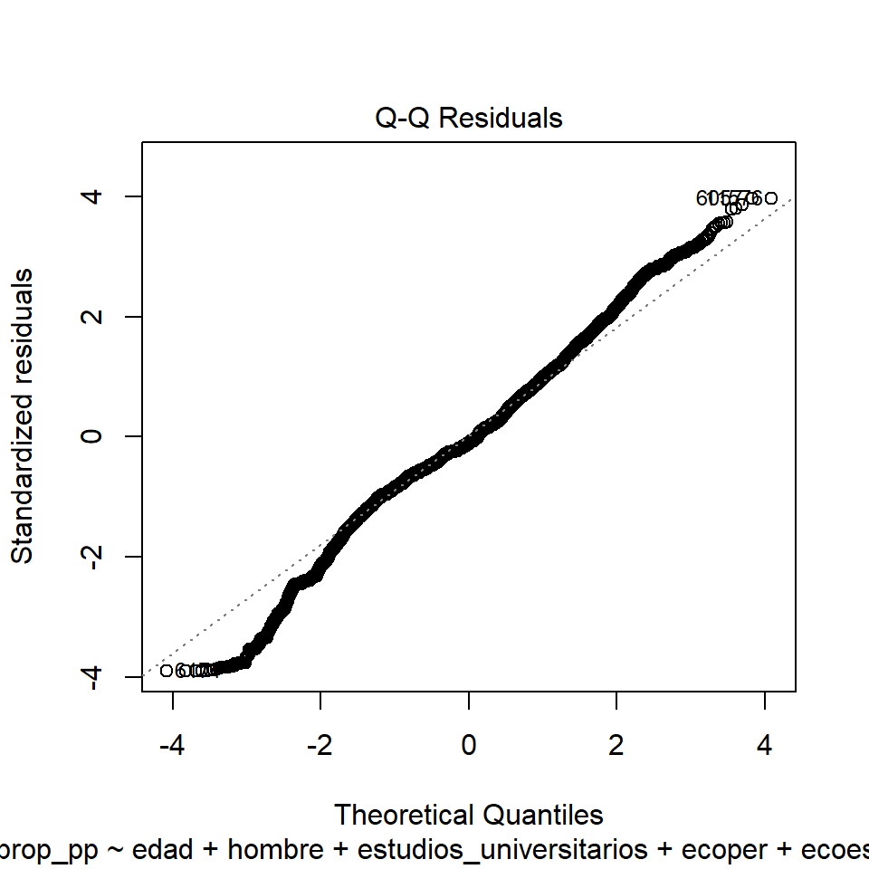
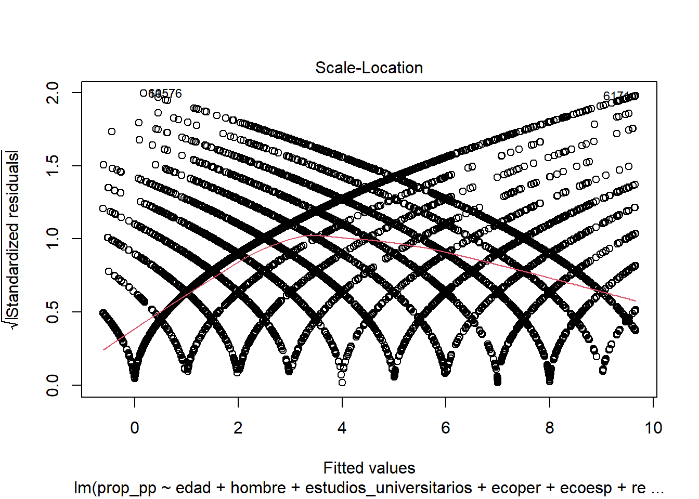
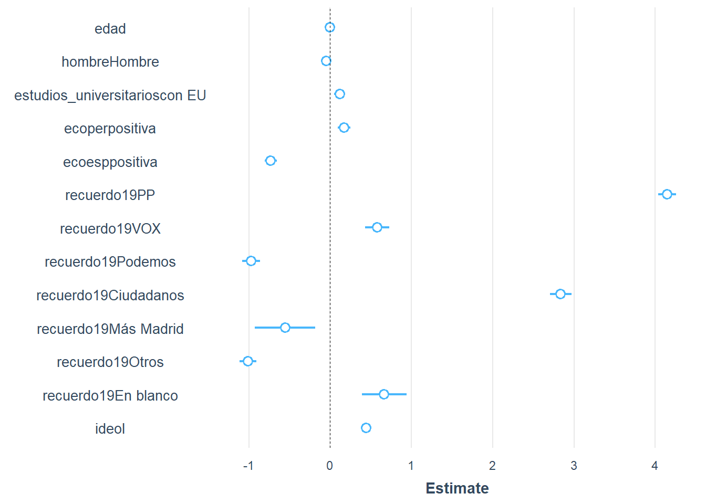
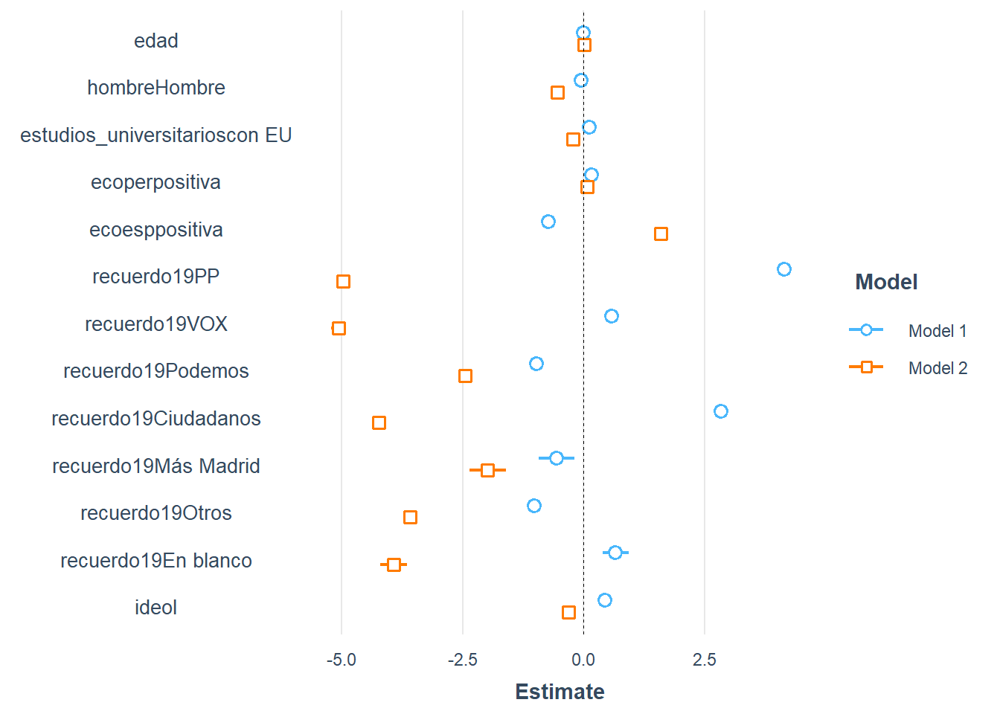
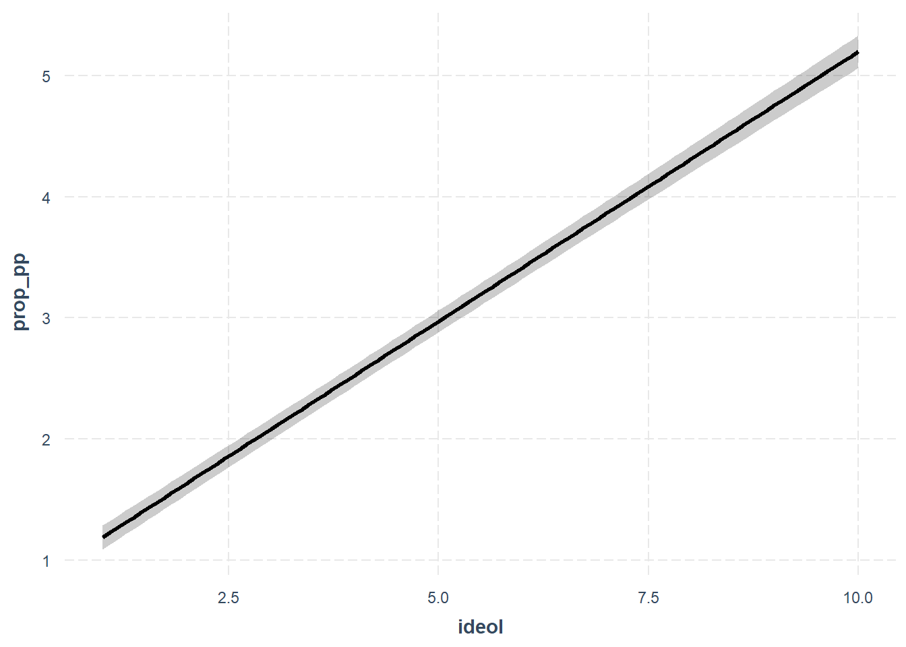

myvars <- c("prop_psoe", "prop_pp", "edad", "hombre", "recuerdo19", "estudios_universitarios", "ideol", "ecoper", "ecoesp") # nuevo data.frame
datos_red<-datos[myvars] #Los corchetes sirven para seleccionar solo el conjunto de datos especificado. También podría usarse la función select.
datos_red<- na.omit(datos_red)Llamamos regresión lineal múltiple al análisis de regresión que incluye más de una variable independiente. Se representa como:
\[E(y) = \beta_{0} + \beta_{1}{x_{1}} + \ \beta_{12}{x_{2}} + \beta_{3}{x_{3}} + u\]
donde β0 es el valor de y cuando todas las xi valen 0, βi son los coeficientes de las variables independientes y el término u es el término de error.
Esta ecuación definiría un hiperplano, pues con una VI se define una recta, con dos VIs un plano, con tres VIs un espacio de tres dimensiones, y así sucesivamente.
Resumen de las funciones principales
# Eliminar los NA de la base de datos
lista_variables <- c("var1","var2","var3"...)
datos_reg <- datos[lista_variables]
datos_reg <- na.omit(datos_Reg)
# Función de la regresión
regresión <- lm(var1~var2 + var3 + var4, datos_reg) #Librería e1071
summary(regresión)
#Visualizar los coeficientes
coefplot(regresión, xlim=c(-5, 5), col.pts="blue", intercept=TRUE, main="Coeficientes de la regresión") #Librería arm
# Comprobación de los supuestos principales
plot(regresión,2) #Normalidad de los residuos
bptest(regresión) #Homocedasticidad (librería lmtest)
vif(regresión) #Multicolinealidad (librería rms)
# Valores predichos
#Exportar los resultados
stargazer(regresión, type="text") #Librería stargazer
#Comparación de modelos
AIC(modelo1, modelo2, modelo3)
BIC(modelo1, modelo2, modelo3)Ejemplo práctico
Vamos a estimar la propensión de voto a un partido (variable escala) en función de las siguientes variables:
- edad del entrevistado (variable continua)
- sexo (variable dicotómica)
- nivel educativo (variable dicotómica)
- opinión sobre la situación económica personal (variable dicotómica)
- opinión sobre la situación económica en España (variable dicotómica)
- recuerdo de voto (variable politómica)
- ideología del entrevistado (variable escala)
Es posible que estas variables no configuren un buen modelo. Sin embargo, son un buen ejercicio porque nos permitirá ver cómo se interpretan los diferentes tipos de variables e identificar algunos problemas.
Preparar la base de datos
La regresión lineal es “sensible” a la existencia de casos perdidos en las variables que se introducen en los modelos. Para evitar que diferentes modelos tengan diferentes número de casos (en cuyo caso no serían comparables) creamos un nuevo data.frame que contenga únicamente las columnas que vamos a usar para estimar los modelos, para eliminar de estos los casos perdidos. A continuación, eliminamos todas las filas que continenen valores perdidos. Esto se hace usando la funciones na.omit() o na.exclude().
El modelo de regresión
A continuación, esitmamos el modelo de regresión (modelPP) con las variables arriba especificadas. Usaremos la función lm() de la libería e1071 (como ocurre siempre, existen muchas otras librerías que incluyen funciones para estimar regresiones lineales y son igualmente válidas).
library(e1071)
modelPP <- lm(prop_pp ~ edad + hombre + estudios_universitarios + ecoper + ecoesp + recuerdo19 + ideol, data=datos_red)
summary(modelPP)
Call:
lm(formula = prop_pp ~ edad + hombre + estudios_universitarios +
ecoper + ecoesp + recuerdo19 + ideol, data = datos_red)
Residuals:
Min 1Q Median 3Q Max
-9.6522 -1.4692 -0.2591 1.5518 9.8268
Coefficients:
Estimate Std. Error t value Pr(>|t|)
(Intercept) 0.764501 0.082283 9.291 < 2e-16 ***
edad -0.000385 0.001114 -0.346 0.729637
hombreHombre -0.045523 0.033180 -1.372 0.170080
estudios_universitarioscon EU 0.120337 0.034416 3.497 0.000472 ***
ecoperpositiva 0.173926 0.038775 4.485 7.31e-06 ***
ecoesppositiva -0.729276 0.038624 -18.881 < 2e-16 ***
recuerdo19PP 4.149196 0.055763 74.407 < 2e-16 ***
recuerdo19VOX 0.580711 0.075540 7.687 1.56e-14 ***
recuerdo19Podemos -0.969983 0.056628 -17.129 < 2e-16 ***
recuerdo19Ciudadanos 2.837302 0.068713 41.292 < 2e-16 ***
recuerdo19Más Madrid -0.554132 0.189993 -2.917 0.003542 **
recuerdo19Otros -1.012513 0.052845 -19.160 < 2e-16 ***
recuerdo19En blanco 0.666554 0.139864 4.766 1.89e-06 ***
ideol 0.445504 0.008478 52.549 < 2e-16 ***
---
Signif. codes: 0 '***' 0.001 '**' 0.01 '*' 0.05 '.' 0.1 ' ' 1
Residual standard error: 2.473 on 22880 degrees of freedom
Multiple R-squared: 0.5873, Adjusted R-squared: 0.5871
F-statistic: 2505 on 13 and 22880 DF, p-value: < 2.2e-16Como podemos observar, R transforma la variable politómica “recuerdo19” en c-1 variables. Lo hace porque está definida como factor, de lo contrario trataría la variable como numérica (lo cual no tendría ningún sentido). En este caso, cada variable se interpreta en relación a la categoría de refencia (en este caso, PSOE). La función relevel() nos permite cambiar cambiar la categoría de referencia. Por ejemplo, si queremos que “PP” sea nuestra categoría de referencia, haríamos lo siguiente:
Lo único que cambia es la categoría de referencia en la variable recuerdo19 y, por consiguiente, los coeficientes de las dummies. El resto de la tabla será idéntica.
modelPP_newrc<- lm(prop_pp ~ edad + hombre + estudios_universitarios + ecoper + ecoesp +relevel(recuerdo19, ref ="PP") + ideol, data=datos_red)
summary(modelPP_newrc)Significatividad del modelo
Los resultados muestran que todas las variables menos edad y género son estadísticamente significativas para un NC del 99.9%. Esto es así porque, dado que los p-valores son <0.001, podemos rechazar la hipótesis nula con una probabilidad de equivocarnos inferior a 0.001.
Interpretación de los coeficientes
Más allá de la significación estadística, es importante interpretar el tamaño del coeficiente. En otras palabras, la magnitud del efecto. En regresión lineal múltiple, los coeficientes de regresión representan el cambio promedio que se produce en la VD por cada unidad de cambio en la VI, mientras el resto de variables se mantiene constante (ceteris paribus). Este control estadístico que proporciona la regresión es muy importante, porque aisla el efecto de una variable del resto de variable incluidas en el modelo.
El valor de los coeficientes se obtiene con la función sumary() del modelo, y también puede extraerse fácilmente de la lista modelPP (ver función View(modelPP))
modelPP$coefficients (Intercept) edad
0.7645004705 -0.0003850228
hombreHombre estudios_universitarioscon EU
-0.0455226223 0.1203369895
ecoperpositiva ecoesppositiva
0.1739256464 -0.7292760576
recuerdo19PP recuerdo19VOX
4.1491958693 0.5807105360
recuerdo19Podemos recuerdo19Ciudadanos
-0.9699832612 2.8373014511
recuerdo19Más Madrid recuerdo19Otros
-0.5541319048 -1.0125132971
recuerdo19En blanco ideol
0.6665536962 0.4455040602 Vamos a ver algunos ejemplos:
- El coeficiente de estudios_universitarioscon_ES (0.1203) indica que, manteniendo constantes todas las demás variables, tener estudios universitarios está asociado con un aumento de 0.1203 unidades en la propensión de voto al Partido Popular. En otras palabras, las personas con estudios universitarios tienen, en promedio, una mayor inclinación a votar por el Partido Popular en comparación con aquellas que no tienen estudios universitario (ceteris paribus)
- El coeficiente de recuerdo19PP (4.149) indica que, manteniendo constantes todas las demás variables, las personas que recuerdan haber votado al Partido Popular en las elecciones de 2019 tienen una propensión de voto al Partido Popular 4.149 unidades mayor en comparación con aquellas que recuerdan haber votado al PSOE (la categoría de referencia). Esto significa que, en términos de propensión al voto, el recuerdo de haber votado al PP en el pasado está fuertemente asociado con una mayor inclinación a votar nuevamente por este partido, mucho más que en comparación con aquellos que votaron al PSOE (ceteris paribus)
Visualizacion de los coeficientes
Una manera rápida de presentar los resultados de la regresión es representar gráficamente los coeficientes. Para ello, podemos usar la función coefplot()
p_load(arm)
coefplot(modelPP, xlim=c(-5, 5),col.pts="blue", intercept=TRUE, main="Coeficientes de la regresión")
Este tipo de gráfico es particularmente útil cuando queremos comparar los coeficientes de dos o más modelos. Por ejemplo, si calculamos el mismo modelo para estimar la propensión de voto al PSOE, podemos visualizar los coeficientes de ambos modelos de la siguiente manera
#Estimamos el modelo
modelPSOE <- lm(prop_psoe ~ edad + hombre + estudios_universitarios + ecoper + ecoesp + recuerdo19 + ideol, data=datos_red)
#Representamos gráficamente los coeficientes de ambas regresiones (argumento add=T)
par(mfrow = c(1,1))
coefplot(modelPP, xlim=c(-5, 5),col.pts="blue", intercept=TRUE, main="Coeficientes")
coefplot(modelPSOE, add=TRUE, col.pts="red", intercept=TRUE, offset=0.2, main="PSOE")
#Añadimos leyenda
legend("topright",
c("Propensión voto PP", "Propensión voto PSOE"),
lty = c(1,1),
col=c("blue","red"),
cex = 0.7)
¿Qué variable es la más importante?
Dado que las variables están expresadas en diferentes unidades, los coeficientes de la regresión no son directamente comparables entre sí. Para hacer esto posible, es necesario transformar dichos coeficientes en coeficientes estandarizados (coeficientes Beta). Los coeficientes estandarizados se basan en puntuaciones típicas y, por lo tanto, son comparables entre sí.
p_load(lm.beta)
betaPP<-lm.beta(modelPP)
summary(betaPP)
Call:
lm(formula = prop_pp ~ edad + hombre + estudios_universitarios +
ecoper + ecoesp + recuerdo19 + ideol, data = datos_red)
Residuals:
Min 1Q Median 3Q Max
-9.6522 -1.4692 -0.2591 1.5518 9.8268
Coefficients:
Estimate Standardized Std. Error t value
(Intercept) 0.764501 NA 0.082283 9.291
edad -0.000385 -0.001541 0.001114 -0.346
hombreHombre -0.045523 -0.005909 0.033180 -1.372
estudios_universitarioscon EU 0.120337 0.015627 0.034416 3.497
ecoperpositiva 0.173926 0.020009 0.038775 4.485
ecoesppositiva -0.729276 -0.091072 0.038624 -18.881
recuerdo19PP 4.149196 0.442365 0.055763 74.407
recuerdo19VOX 0.580711 0.040263 0.075540 7.687
recuerdo19Podemos -0.969983 -0.080576 0.056628 -17.129
recuerdo19Ciudadanos 2.837302 0.197182 0.068713 41.292
recuerdo19Más Madrid -0.554132 -0.012506 0.189993 -2.917
recuerdo19Otros -1.012513 -0.089720 0.052845 -19.160
recuerdo19En blanco 0.666554 0.020676 0.139864 4.766
ideol 0.445504 0.310399 0.008478 52.549
Pr(>|t|)
(Intercept) < 2e-16 ***
edad 0.729637
hombreHombre 0.170080
estudios_universitarioscon EU 0.000472 ***
ecoperpositiva 7.31e-06 ***
ecoesppositiva < 2e-16 ***
recuerdo19PP < 2e-16 ***
recuerdo19VOX 1.56e-14 ***
recuerdo19Podemos < 2e-16 ***
recuerdo19Ciudadanos < 2e-16 ***
recuerdo19Más Madrid 0.003542 **
recuerdo19Otros < 2e-16 ***
recuerdo19En blanco 1.89e-06 ***
ideol < 2e-16 ***
---
Signif. codes: 0 '***' 0.001 '**' 0.01 '*' 0.05 '.' 0.1 ' ' 1
Residual standard error: 2.473 on 22880 degrees of freedom
Multiple R-squared: 0.5873, Adjusted R-squared: 0.5871
F-statistic: 2505 on 13 and 22880 DF, p-value: < 2.2e-16Los coeficientes estandarizados representan la cantidad de cambio, en unidades de desviación estándar, que se producirá en la variable dependiente por cada aumento de una unidad de desviación estándar en la correspondiente variable independiente (manteniendo constantes las demás variables). Al estandarizar las variables, la constante se iguala a 0, por lo que no se incluye en la ecuación de predicción. Estos coeficientes indican la importancia relativa de cada variable independiente en la ecuación de regresión. En general, cuanto mayor es el valor absoluto del coeficiente de regresión estandarizado, mayor es el peso de la variable en la ecuación de regresión.
Bondad de ajuste del modelo
El R2 tiene un valor de 0.5873, lo que indica que nuestro modelo explica el 58.73% de varianza de la VD. En este caso, el valor de R2 ajustado es prácticamente idéntico.
Diagnóstico de la regresión
Vamos a comprobar los supuestos de la regresión
- Normalidad de los residuos. El test de normalidad que usamos en el ejemplo de regresión simple (Shapiro test) está limitado a n=5000. Dado que no tenemos esa opción, vamos a revisar el supuesto de normalidad un gráfico Q-Q:
plot(modelPP, 2)
Comprobamos también que la media de los residuos=0
mean(modelPP$residuals)[1] -2.04219e-16- Homocedasticidad (varianza constante de los residuos)
- Test de homocedasticidad
#install.packages("lmtest")
library(lmtest)
het.lm<-bptest(modelPP)
het.lm
studentized Breusch-Pagan test
data: modelPP
BP = 2557.5, df = 13, p-value < 2.2e-16La hipótesis nula en este test es que la varianza de los residuos es constante (homocedástica). La evidencia permite rechazar la hipótesis nula, confirmando que la distribución es heterocedástica (no se cumple el suspuesto). La distrivución de los residuos no es constante.
- Gráficamente:
plot( modelPP, 3)
- Multicolinealidad.
reg.lineal.vif <- car::vif(modelPP)
reg.lineal.vif GVIF Df GVIF^(1/(2*Df))
edad 1.102517 1 1.050008
hombre 1.028258 1 1.014030
estudios_universitarios 1.107391 1 1.052327
ecoper 1.103228 1 1.050347
ecoesp 1.289873 1 1.135726
recuerdo19 2.198730 7 1.057891
ideol 1.934408 1 1.390830No parece que existan problemas de multicolinealidad en nuestro modelo.
Valores predichos
Al igual que hicimos con los coeficientes, una vez calculado el modelo podemos extraer los valores predichos (estimados) para cada individuo en la muestra consultando modelPP$fitted.values. Esto nos permite, por ejemplo, calcular el valor medio de propensión de voto al PP:
mean(modelPP$fitted.values)[1] 3.678606También podemos estimar qué valor tendrá la variable dependiente para determinados valores de las variables independientes. Por ejemplo, vamos a calcular la propensión de voto al PP de un varón de 50 años, sin estudios universitarios (0), que valora positivamente su situación económica personal (1) pero no la situación económica del país (0), con ideología 5 y que en las elecciones de 2019 votó a C`s.
data1 <- data.frame(hombre="Hombre", edad=50, estudios_universitarios="con EU", ecoper="positiva", ecoesp="negativa", ideol=5, recuerdo19="Ciudadanos")
yhat1<-predict(modelPP, newdata = data1)
yhat1 1
6.058811 O calcular, por ejemplo, cómo cambia la propensión de voto al PP para un individuo con esas mismas características en función de su edad:
data2<- data.frame(hombre="Hombre", edad=c(20, 30, 40, 50, 60, 70, 80), estudios_universitarios="con EU", ecoper="positiva", ecoesp="negativa", ideol=5, recuerdo19="Ciudadanos")
yhat2<-predict(modelPP, newdata = data2)
yhat2 1 2 3 4 5 6 7
6.070362 6.066512 6.062661 6.058811 6.054961 6.051111 6.047260 Intervalos de confianza
Los intervalos de confianza reflejan la incertidumbre alrededor de las estimaciones medias. Siguiendo con el ejemplo anterior, vamos a calcular las probabilidades predichas con sus intervalos de confianza para todos los individuos en la muestra (fit es el valor predicho):
yhat<-predict(modelPP, newdata = datos_red, interval = "confidence")
head(yhat) #visualizamos los 5 primeros casos fit lwr upr
1 7.0760579 6.9727774 7.1793383
2 8.1922896 8.0917476 8.2928316
3 8.0114335 7.9169740 8.1058930
4 0.5837394 0.4690074 0.6984715
5 3.6770243 3.5669840 3.7870646
6 1.9297500 1.8417350 2.0177651Si no queremos ver los casos perdidos usamos el argumento na.action para especificarlo
yhat<-predict(modelPP, newdata = datos_red, interval = "confidence", na.action=na.exclude)
head(yhat) fit lwr upr
1 7.0760579 6.9727774 7.1793383
2 8.1922896 8.0917476 8.2928316
3 8.0114335 7.9169740 8.1058930
4 0.5837394 0.4690074 0.6984715
5 3.6770243 3.5669840 3.7870646
6 1.9297500 1.8417350 2.0177651El output contiene 3 columnas:
- FIT: el valor predicho (que también habíamos consultado a través de
modelPP$fitted.values) - LWR: límite inferior de la banda de confianza
- UPR: límite superior de la banda de confianza
Por defecto, R produce bandas de confianza al 95%, pero esto se puede cambiar con el argumento level
yhat<-predict(modelPP, newdata = datos_red, interval = "confidence", na.action=na.exclude, level=0.99)
head(yhat) fit lwr upr
1 7.0760579 6.9403202 7.2117955
2 8.1922896 8.0601510 8.3244282
3 8.0114335 7.8872889 8.1355781
4 0.5837394 0.4329514 0.7345275
5 3.6770243 3.5324024 3.8216462
6 1.9297500 1.8140751 2.0454250Exportar resultados
Vamos a exportar a formato científico los dos modelos que hemos estimado: modelPP y modelPSOE
Librería stargazer
#install.packages("stargazer")
library(stargazer)
stargazer(modelPP, modelPSOE, #Incluir aquí Modelo1, Modelo2, M3...
type="text",
dep.var.labels=c("Propensión voto PP", "Propensión voto PSOE"),
covariate.labels=c("Edad", "Hombre", "Estudios superiores", "Economia personal: positiva (cr:neg)", "Economia país: positiva (cr:neg)", "Voto 2019:PP (cr: PSOE)", "Voto 2019:VOX (cr: PSOE)", "Voto 2019:Podemos (cr: PSOE)", "Voto 2019:C´s (cr: PSOE)", "Voto 2019:Más Madrid (cr: PSOE)", "Voto 2019:Otros (cr: PSOE)", "Voto 2019:Blanco (cr: PSOE)", "Ideología", "Constante"))
============================================================================
Dependent variable:
---------------------------------------
Propensión voto PP Propensión voto PSOE
(1) (2)
----------------------------------------------------------------------------
Edad -0.0004 0.011***
(0.001) (0.001)
Hombre -0.046 -0.536***
(0.033) (0.034)
Estudios superiores 0.120*** -0.220***
(0.034) (0.035)
Economia personal: positiva (cr:neg) 0.174*** 0.073*
(0.039) (0.040)
Economia país: positiva (cr:neg) -0.729*** 1.597***
(0.039) (0.040)
Voto 2019:PP (cr: PSOE) 4.149*** -4.966***
(0.056) (0.057)
Voto 2019:VOX (cr: PSOE) 0.581*** -5.070***
(0.076) (0.077)
Voto 2019:Podemos (cr: PSOE) -0.970*** -2.444***
(0.057) (0.058)
Voto 2019:C´s (cr: PSOE) 2.837*** -4.226***
(0.069) (0.070)
Voto 2019:Más Madrid (cr: PSOE) -0.554*** -1.982***
(0.190) (0.195)
Voto 2019:Otros (cr: PSOE) -1.013*** -3.589***
(0.053) (0.054)
Voto 2019:Blanco (cr: PSOE) 0.667*** -3.927***
(0.140) (0.143)
Ideología 0.446*** -0.305***
(0.008) (0.009)
Constante 0.765*** 7.650***
(0.082) (0.084)
----------------------------------------------------------------------------
Observations 22,894 22,894
R2 0.587 0.593
Adjusted R2 0.587 0.592
Residual Std. Error (df = 22880) 2.473 2.532
F Statistic (df = 13; 22880) 2,504.777*** 2,560.708***
============================================================================
Note: *p<0.1; **p<0.05; ***p<0.01Librería jtools
Está disponible únicamente para un tipo de modelos muy limitado, pero OLS y GLM están incluidos.
Instalamos los paquetes que van a hacernos falta
p_load(jtools, ggstance, huxtable)La función summ() muestra los resultados de la regresión
summ(modelPP)MODEL INFO:
Observations: 22894
Dependent Variable: prop_pp
Type: OLS linear regression
MODEL FIT:
F(13,22880) = 2504.78, p = 0.00
R² = 0.59
Adj. R² = 0.59
Standard errors:OLS
-------------------------------------------------------------
Est. S.E. t val. p
------------------------------ ------- ------ -------- ------
(Intercept) 0.76 0.08 9.29 0.00
edad -0.00 0.00 -0.35 0.73
hombreHombre -0.05 0.03 -1.37 0.17
estudios_universitarioscon 0.12 0.03 3.50 0.00
EU
ecoperpositiva 0.17 0.04 4.49 0.00
ecoesppositiva -0.73 0.04 -18.88 0.00
recuerdo19PP 4.15 0.06 74.41 0.00
recuerdo19VOX 0.58 0.08 7.69 0.00
recuerdo19Podemos -0.97 0.06 -17.13 0.00
recuerdo19Ciudadanos 2.84 0.07 41.29 0.00
recuerdo19Más Madrid -0.55 0.19 -2.92 0.00
recuerdo19Otros -1.01 0.05 -19.16 0.00
recuerdo19En blanco 0.67 0.14 4.77 0.00
ideol 0.45 0.01 52.55 0.00
-------------------------------------------------------------La representación gráfica de los coeficientes también se hace de manera muy sencilla y muy parecida a la que ya conocemos
plot_summs(modelPP)
Se pueden añadir tantos modelos como deseemos
plot_summs(modelPP, modelPSOE)
También permite visualizar de manera rápida el efecto de una variable sobre la variable dependiente, siempre que la primera sea continua. Por ejemplo, vamos cómo varía la propensión de votar al PP con la ideología, controlado por el resto de variables
effect_plot(modelPP, pred = ideol, interval = TRUE)
Finalmente, la función export_summs de jtools permite representar las tablas en formato “científico”.
export_summs(modelPP, modelPSOE)| Model 1 | Model 2 | |
|---|---|---|
| (Intercept) | 0.76 *** | 7.65 *** |
| (0.08) | (0.08) | |
| edad | -0.00 | 0.01 *** |
| (0.00) | (0.00) | |
| hombreHombre | -0.05 | -0.54 *** |
| (0.03) | (0.03) | |
| estudios_universitarioscon EU | 0.12 *** | -0.22 *** |
| (0.03) | (0.04) | |
| ecoperpositiva | 0.17 *** | 0.07 |
| (0.04) | (0.04) | |
| ecoesppositiva | -0.73 *** | 1.60 *** |
| (0.04) | (0.04) | |
| recuerdo19PP | 4.15 *** | -4.97 *** |
| (0.06) | (0.06) | |
| recuerdo19VOX | 0.58 *** | -5.07 *** |
| (0.08) | (0.08) | |
| recuerdo19Podemos | -0.97 *** | -2.44 *** |
| (0.06) | (0.06) | |
| recuerdo19Ciudadanos | 2.84 *** | -4.23 *** |
| (0.07) | (0.07) | |
| recuerdo19Más Madrid | -0.55 ** | -1.98 *** |
| (0.19) | (0.19) | |
| recuerdo19Otros | -1.01 *** | -3.59 *** |
| (0.05) | (0.05) | |
| recuerdo19En blanco | 0.67 *** | -3.93 *** |
| (0.14) | (0.14) | |
| ideol | 0.45 *** | -0.31 *** |
| (0.01) | (0.01) | |
| N | 22894 | 22894 |
| R2 | 0.59 | 0.59 |
| *** p < 0.001; ** p < 0.01; * p < 0.05. | ||
Para renombrar los modelos y las variables, usaremos los argumentos model.names y coefs de la siguiente manera
export_summs(modelPP, modelPSOE,
model.names=c("Prop. Voto PP",
"Prop. Voto PSOE"),
coefs=c("Edad"="edad",
"Hombre"="hombreHombre",
"Estudios Universitarios"="estudios_universitarioscon EU",
"Economía personal positiva (cr=neg)"="ecoperpositiva",
"Economía país positiva (cr=neg)"="ecoesppositiva",
"Voto 2019:PP (cr=PSOE)"="recuerdo19PP",
"Voto 2019:VOX (cr=PSOE)"="recuerdo19VOX",
"Voto 2019:Podemos (cr=PSOE)"="recuerdo19Podemos",
"Voto 2019:C´s (cr=PSOE)"="recuerdo19Ciudadanos",
"Voto 2019:Mas País (cr=PSOE)"="recuerdo19Más Madrid",
"Voto 2019:Otros (cr=PSOE)"="recuerdo19Otros",
"Voto 2019:Blanco (cr=PSOE)"="recuerdo19En blanco",
"Ideología"="ideol",
"Constante"="(Intercept)"
))| Prop. Voto PP | Prop. Voto PSOE | |
|---|---|---|
| Edad | -0.00 | 0.01 *** |
| (0.00) | (0.00) | |
| Hombre | -0.05 | -0.54 *** |
| (0.03) | (0.03) | |
| Estudios Universitarios | 0.12 *** | -0.22 *** |
| (0.03) | (0.04) | |
| Economía personal positiva (cr=neg) | 0.17 *** | 0.07 |
| (0.04) | (0.04) | |
| Economía país positiva (cr=neg) | -0.73 *** | 1.60 *** |
| (0.04) | (0.04) | |
| Voto 2019:PP (cr=PSOE) | 4.15 *** | -4.97 *** |
| (0.06) | (0.06) | |
| Voto 2019:VOX (cr=PSOE) | 0.58 *** | -5.07 *** |
| (0.08) | (0.08) | |
| Voto 2019:Podemos (cr=PSOE) | -0.97 *** | -2.44 *** |
| (0.06) | (0.06) | |
| Voto 2019:C´s (cr=PSOE) | 2.84 *** | -4.23 *** |
| (0.07) | (0.07) | |
| Voto 2019:Mas País (cr=PSOE) | -0.55 ** | -1.98 *** |
| (0.19) | (0.19) | |
| Voto 2019:Otros (cr=PSOE) | -1.01 *** | -3.59 *** |
| (0.05) | (0.05) | |
| Voto 2019:Blanco (cr=PSOE) | 0.67 *** | -3.93 *** |
| (0.14) | (0.14) | |
| Ideología | 0.45 *** | -0.31 *** |
| (0.01) | (0.01) | |
| Constante | 0.76 *** | 7.65 *** |
| (0.08) | (0.08) | |
| N | 22894 | 22894 |
| R2 | 0.59 | 0.59 |
| *** p < 0.001; ** p < 0.01; * p < 0.05. | ||
Comparación de modelos
Es muy frecuente tener que elegir entre diferentes modelos. Hasta ahora, nos hemos fijado en el R2 para ver cuál era la bondad de ajuste del modelo. Aquí, vamos a introducir dos nuevos indicadores: BIC (Criterio de Información Bayesiano) y AIC (Criterio de Información de Akaike).
Cuando introducimos nuevas variables en el modelo aumentamos el ajuste (a mayor número de variables, mayor R2), pero corremos el peligro de caer en sobreajuste (introducir demasiadas variables, siendo algunas de ellas innecesarias para el modelo). Solo es conveniente incluir más variables en un modelo si la diferencia que añaden sobre la significatividad del modelo es lo suficiente relevante. BIC y AIC resuelven este problema mediante la introducción de un término de penalización para el número de parámetros en el modelo (esta penalización es mayor en el BIC que en el AIC). Así, dados dos modelos estimados, el modelo con el menor valor de BIC/AIC es preferible. Existe también el AIC corregido (AICc), que es una variante del AIC para muestras reducidas (pocos datos).
No es necesario realizar los dos análisis, sino que con uno de los dos es suficiente para ver qué modelo es más eficiente.
Estimamos los modelos con el dataset reducido. El modelo1 incluye sólamente la variable ideología. El modelo2 añade el sexo y el nivel educativo. El modelo3 es el full-model, que incluye la edad y la situación laboral del entrevistado.
modelo1 <- lm(prop_pp ~ hombre+estudios_universitarios, datos_red)
modelo2 <- lm(prop_pp ~ hombre+estudios_universitarios+ ideol, datos_red)
modelo3 <- lm(prop_pp ~ hombre+estudios_universitarios+ideol+recuerdo19, datos_red) Visualizamos los 3 modelos en una misma tabla
library(stargazer)
stargazer(modelo1, modelo2, modelo3,
type="text",
dep.var.labels=c("M1", "M2", "M3"),
covariate.labels=c("Hombre", "Estudios superiores","Ideología", "Voto 2019:PP (cr: PSOE)", "Voto 2019:VOX (cr: PSOE)", "Voto 2019:Podemos (cr: PSOE)", "Voto 2019:C´s (cr: PSOE)", "Voto 2019:Más Madrid (cr: PSOE)", "Voto 2019:Otros (cr: PSOE)", "Voto 2019:Blanco (cr: PSOE)", "Constante"))
=================================================================================================================
Dependent variable:
---------------------------------------------------------------------------------
M1
(1) (2) (3)
-----------------------------------------------------------------------------------------------------------------
Hombre -0.112** -0.199*** -0.110***
(0.051) (0.039) (0.033)
Estudios superiores -0.007 0.204*** 0.131***
(0.051) (0.039) (0.033)
Ideología 0.910*** 0.463***
(0.007) (0.008)
Voto 2019:PP (cr: PSOE) 4.376***
(0.055)
Voto 2019:VOX (cr: PSOE) 0.842***
(0.074)
Voto 2019:Podemos (cr: PSOE) -0.970***
(0.057)
Voto 2019:C´s (cr: PSOE) 3.069***
(0.068)
Voto 2019:Más Madrid (cr: PSOE) -0.535***
(0.191)
Voto 2019:Otros (cr: PSOE) -0.914***
(0.053)
Voto 2019:Blanco (cr: PSOE) 0.901***
(0.140)
Constante 3.741*** -0.656*** 0.448***
(0.045) (0.050) (0.047)
-----------------------------------------------------------------------------------------------------------------
Observations 22,894 22,894 22,894
R2 0.0002 0.401 0.581
Adjusted R2 0.0001 0.401 0.581
Residual Std. Error 3.848 (df = 22891) 2.978 (df = 22890) 2.492 (df = 22883)
F Statistic 2.434* (df = 2; 22891) 5,108.655*** (df = 3; 22890) 3,170.031*** (df = 10; 22883)
=================================================================================================================
Note: *p<0.1; **p<0.05; ***p<0.01Y calculamos los BIC/AIC
AIC(modelo1, modelo2, modelo3)| df | AIC |
|---|---|
| 4 | 1.27e+05 |
| 5 | 1.15e+05 |
| 12 | 1.07e+05 |
BIC(modelo1, modelo2, modelo3)| df | BIC |
|---|---|
| 4 | 1.27e+05 |
| 5 | 1.15e+05 |
| 12 | 1.07e+05 |
Diferencias más notables:
- R2 ajustado es una medida de la varianza explicada en la variable de respuesta por los predictores, mientras que BIC/AIC son una compensación entre la bondad del ajuste y la complejidad del modelo.
- R2 puede subir o bajar según se agregue o no otra variable al modelo. Pero el AIC/BIC no necesariamente cambian con la adición de una variable, sino que cambia con la composición de los predictores.
- Otra ventaja adicional es que AIC/BIC permiten comparar entre modelos que no están anidados.